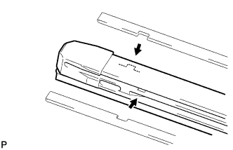
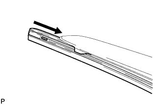
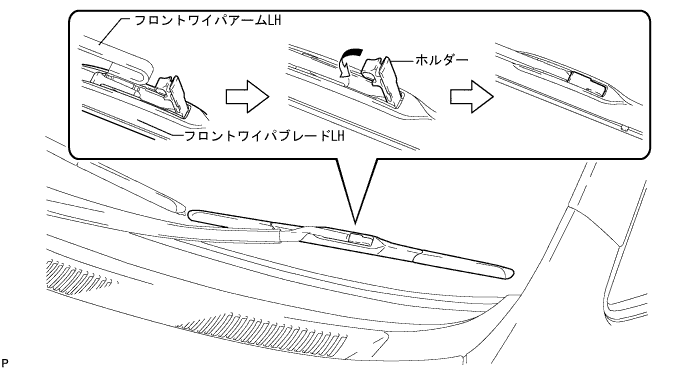

Wiper Rubber LH Installation |
| 1. Install Wiper Rubber LH |
 |
Install the wiper rubber LH to the wiper rubber backing plate.
 |
Install the wiper rubber LH to the front wiper blade LH so that the head (the bulged end) of the wiper rubber LH faces the arm shaft side.
| 2. Install Front Wiper Blade LH |
Install the front wiper blade LH to the front wiper arm LH.
Install the holder of the front wiper blade LH as shown in the illustration.
